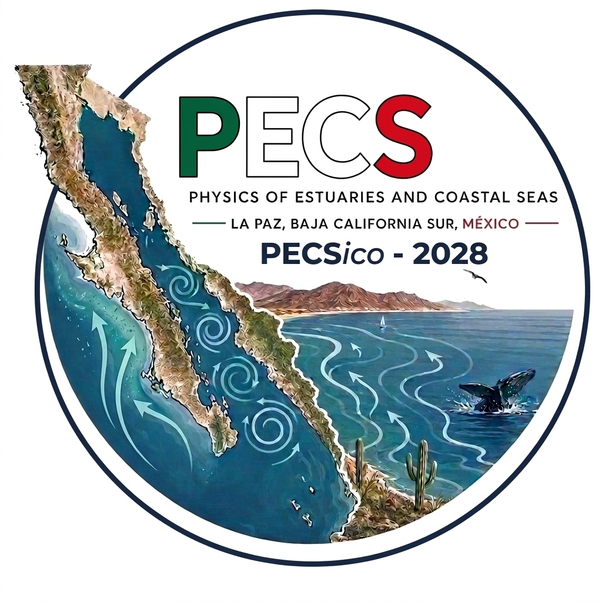

Scientific sessions
Themes and session conveners to be confirmed.
LA PAZ, MEXICO · 2028
PECSico — 2028
A meeting point for coastal ocean science.
A new horizon in La Paz, Mexico.
Preliminary website · Details to be confirmed

PECS · LA PAZ · 202801 / THE MEETING
PECS 2028 is being organized in La Paz, Baja California Sur, Mexico. This preliminary website will bring together the information needed to plan your participation in the Physics of Estuaries and Coastal Seas conference.
The edition’s nickname, PECSico, is a nod to Mexico. The official conference acronym remains PECS.
The visual identity connects the peninsula, Gulf of California eddies and Pacific-side upwelling—an oceanographic setting for this edition.
02 / DATES
The year and host city have been identified. Exact dates and deadlines will be published once confirmed.
03 / PROGRAMME
The scientific programme, session themes, invited speakers and presentation formats will be announced after confirmation by the organizing team.
Themes and session conveners to be confirmed.
Speaker announcements will appear here.
The timetable and programme will be available here.
04 / PARTICIPATE
Abstract submission and registration are not open yet. Instructions, fees and deadlines will be published when available.
Submission guidelines and the submission platform will be announced here.
Not yet openRegistration fees, payment information and eligibility details are to be confirmed.
Not yet openThe conference platform is being prepared. Official links will appear here when available.
Open conference platform ↗05 / LA PAZ
The conference is being organized in La Paz, Baja California Sur. Venue and practical travel information are still being finalized.
The venue name, address and accessibility information will be published here.
Arrival guidance, accommodation options and any conference rates will be announced.
Local transport, visitor information and practical recommendations will follow.
06 / CONTACT
Organizing committee details and the official contact email will be published once confirmed.
Email the organizing team ↗